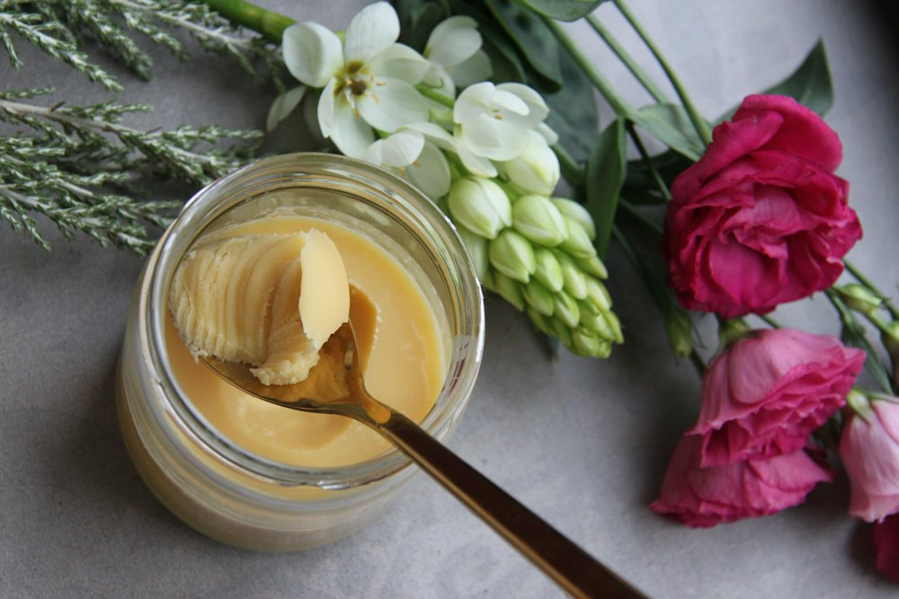
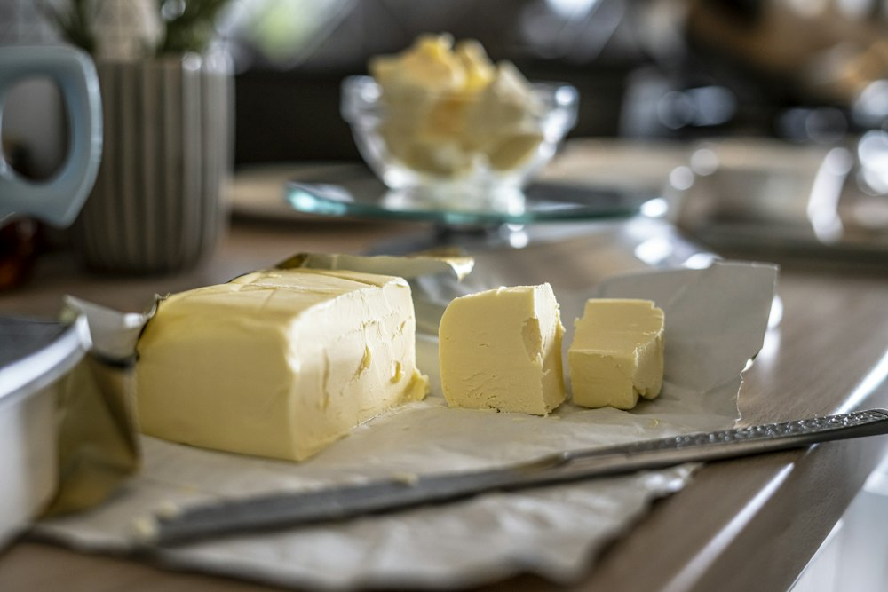
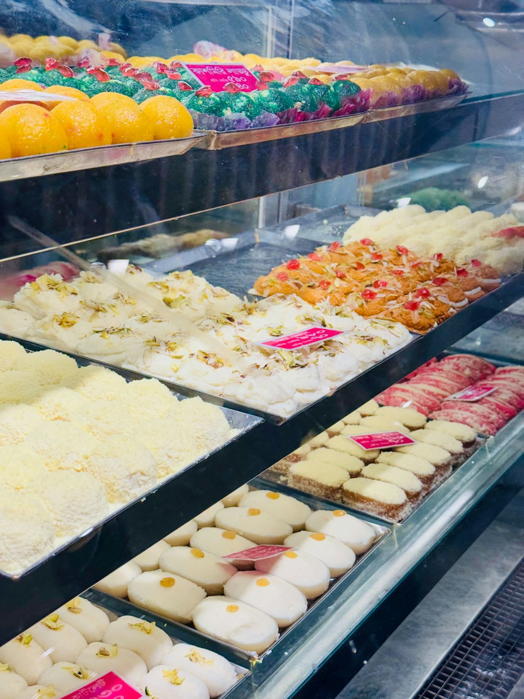

Every product we make starts with milk collected directly from our partner farmers. No preservatives, no shortcuts — just dairy the way it should be.

Full-fat, farm-fresh paneer made daily from pure cow milk. Firm yet soft, with a clean, natural flavour that holds up beautifully in cooking. The go-to choice for restaurants and home kitchens alike.
Best for: Restaurants, home chefs, caterers
Enquire about this product
A richer, creamier variant made with full-cream milk for a softer texture and a more indulgent flavour. Ideal for premium dishes where the paneer is the star of the plate.
Best for: Restaurants, caterers, home chefs
Enquire about this product
Pure desi ghee slow-cooked from farm-fresh butter. Deep golden colour, rich aroma, and a clean finish — the kind of ghee that makes every dish taste like it was made with care.
Best for: Restaurants, dhabas, home kitchens, retail
Enquire about this product
Thick, naturally set curd made from pure milk. Consistent texture, clean tang, and no added stabilisers. Set fresh every day and delivered the same morning.
Best for: Restaurants, dhabas, home chefs, caterers
Enquire about this product
Fresh white butter churned from pure cream. Unsalted and natural — the base for our ghee and a staple in its own right for kitchens that care about what goes into their food.
Best for: Restaurants, bakeries, home chefs, retail
Enquire about this product
Traditionally made khoya slow-reduced from full-fat milk until thick and grainy. The foundation of great mithai and a key ingredient for festive and everyday sweets alike.
Best for: Sweet shops, caterers, home chefs
Enquire about this productWe work with businesses and households across the region. Whether you need daily bulk supply or a weekly home order, we have a format that works for you.

Daily bulk supply with consistent quality. We understand kitchen timelines — your order arrives before service, every time.
Retail packs sized for home use. The same farm-fresh quality your family deserves, delivered to your door.
Large-volume orders with advance scheduling. We accommodate event-specific quantities and can plan standing orders around your calendar.
Wholesale supply with reliable delivery. Stock Farm Og products and give your customers dairy they can trust.
Tell us what you need — product, quantity, and delivery frequency — and we will get back to you with availability and pricing.
Enquire Now